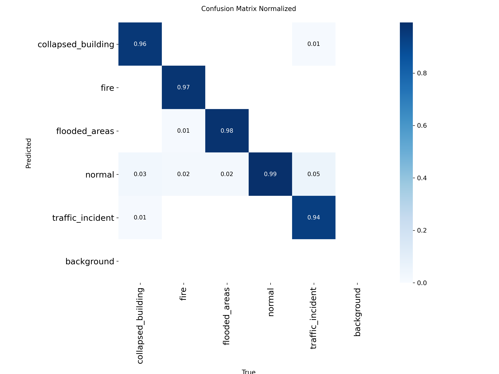

Comparative YOLO Analysis for UAV Disaster Surveillance
Generational comparison of lightweight YOLO nano-scale classification models and activation function micro-optimizations for real-time UAV edge-cloud disaster response on the AIDER dataset.
Hardware & Software Stack
Skills & Competencies
Problem & Solution
The Problem
Deploying deep learning models on UAVs for rapid disaster response (floods, fires, collapses) is constrained by limited onboard CPU/NPU edge-computing resources. Simply adopting newer model architectures (like YOLOv11/v12) increases parameter complexity and GFLOPs without guaranteeing accuracy gains under environmental noise, occlusions, and scale variations.
The Solution
Benchmarking three generations of lightweight nano models (YOLOv8n-cls, YOLOv11n-cls, YOLOv12n-cls) combined with custom activation replacements (SiLU vs ReLU). Our experimental results reveal that micro-optimizing a stable, older model (YOLOv8n-SiLU) yields a peak accuracy of 98.37% (with validation loss of 0.0587), outperforming standard YOLOv12n (97.82%) and YOLOv11n-SiLU (97.67%).
Mathematical Membership Functions & Network Loss
Softmax and Cross-Entropy Loss
Predicted classes are resolved via Softmax probability distributions, and optimized using Cross-Entropy Loss across the 5 target classes:
Activation Function Optimization
Comparing ReLU's thresholding against SiLU's smooth gating parameter flow during network backpropagation:
Data Engineering Pipelines & System Code Showcase
Below is the structured Python & PyTorch source code separated into logical blocks detailing data partitioning, schema definition, neural graph mutation, layer verification, and model metrics extraction.
1. Stratified ETL Split
Stratified dataset split script for partitioning raw disaster image data (70% training, 20% validation, 10% testing).
import os
import shutil
import random
base_dir = '/content/AIDER'
classes = ['collapsed_building', 'fire', 'flooded_areas', 'normal', 'traffic_incident']
# Define dataset partition ratio schema
train_ratio, valid_ratio, test_ratio = 0.7, 0.2, 0.1
for cls in classes:
class_dir = os.path.join(base_dir, cls)
images = [f for f in os.listdir(class_dir) if os.path.isfile(os.path.join(class_dir, f))]
random.shuffle(images)
num_images = len(images)
num_train = int(num_images * train_ratio)
num_valid = int(num_images * valid_ratio)
# Partition target file lists
splits = {
'train': images[:num_train],
'valid': images[num_train:num_train + num_valid],
'test': images[num_train + num_valid:]
}
# Execute filesystem transfer ETL
for split_name, split_files in splits.items():
for img in split_files:
src_path = os.path.join(class_dir, img)
dest_path = os.path.join(base_dir, split_name, cls, img)
shutil.copy(src_path, dest_path)
print("ETL Data Partitioning Complete: 70% Train | 20% Valid | 10% Test")2. Data Schema YAML
Generates dataset YAML metadata configuration file for Ultralytics framework initialization.
import yaml
import os
# Data dictionary configuration schema
data_config = {
'train': '../AIDER/train',
'val': '../AIDER/valid',
'test': '../AIDER/test',
'nc': 5,
'names': ['collapsed_building', 'fire', 'flooded_areas', 'normal', 'traffic_incident']
}
yaml_file_path = '/content/AIDER/data.yaml'
with open(yaml_file_path, 'w') as file:
yaml.dump(data_config, file, default_flow_style=False)
print(f"Data schema configuration written to: {yaml_file_path}")3. PyTorch Graph Mutation
Programmatic activation replacement script to recursively modify PyTorch graph layers (swapping SiLU to ReLU).
import torch.nn as nn
def replace_activation(module):
"""
Recursively iterates through PyTorch layer modules to replace
SiLU activation functions with ReLU.
"""
for name, child in module.named_children():
if isinstance(child, nn.SiLU):
setattr(module, name, nn.ReLU())
else:
replace_activation(child)
# Apply runtime activation replacement on YOLO model backbone
replace_activation(model.model)
print("SiLU activations successfully swapped to ReLU across neural graph.")4. Layer Verification
Introspection verification helper function to validate active backbone activation layer types.
def verify_activation_type(model, target_type='SiLU'):
"""
Introspects underlying PyTorch model modules to verify active layer types.
"""
if hasattr(model, 'model') and model.model is not None:
for module in model.model.modules():
if target_type in str(type(module)):
return True
return False
is_silu = verify_activation_type(model, 'SiLU')
print(f"Model Backbone Activation Verification: {'SiLU Active' if is_silu else 'ReLU Active'}")5. Metrics Extraction ETL
Batch evaluation ETL script for running Ultralytics validation across all trained model checkpoints and logging metrics.
from ultralytics import YOLO
model_folders = [
'yolo8n_cls', 'yolo8n_cls_silu',
'yolo11n_cls', 'yolo11n_cls_silu',
'yolo12n_cls', 'yolo12n_cls_silu'
]
evaluation_results = {}
for folder in model_folders:
weights_path = f'/content/drive/MyDrive/trained_models/{folder}/weights/best.pt'
model = YOLO(weights_path)
# Run test set validation
metrics = model.val(data='/content/AIDER')
# Extract & log performance metrics
evaluation_results[folder] = {
'top1_acc': float(metrics.top1),
'top5_acc': float(metrics.top5)
}
print(f"[{folder}] Top-1 Acc: {metrics.top1:.4f} | Top-5 Acc: {metrics.top5:.4f}")UAV Onboard Classification Showcase
Static benchmark showcase evaluating top-performing model checkpoint (yolo8n_silu_best.pt) on sample aerial disaster imagery.
Epoch Learning Curves (Epoch 1 – 50)
Explore real metrics parsed from each model's results.csv log file. Toggle between Top-1 Accuracy, Validation Loss, and Training Loss to compare epoch convergence across all 6 model configurations.
Actual Model Confusion Matrices (AIDER Test Set)
Click a model button below to inspect its high-resolution normalized confusion matrix evaluated on the 646-image AIDER test set.

Summary Performance Matrix
| Model Generation | Activation Function | Top-1 Accuracy | Validation Loss | Best Epoch | Model Weights |
|---|---|---|---|---|---|
| YOLOv8n (Baseline) | ReLU (Modified) | 97.59% | 0.1063 | 41 | best.pt |
| YOLOv8n-SiLU (Best) | SiLU (Default) | 98.37% | 0.0587 | 47 | best.pt |
| YOLOv11n | ReLU (Modified) | 97.51% | 0.0942 | 41 | best.pt |
| YOLOv11n-SiLU | SiLU (Default) | 97.67% | 0.0988 | 42 | best.pt |
| YOLOv12n | ReLU (Modified) | 97.82% | 0.0853 | 37 | best.pt |
| YOLOv12n-SiLU | SiLU (Default) | 97.05% (-0.77% Degraded) | 0.0999 | 40 | best.pt |
Publications, Python Tools & Reproducibility
Interested in the Source Code & Models?
Access the complete comparative training scripts, PyTorch weight checkpoints (.pt), ONNX export scripts, and evaluation notebooks on GitHub.